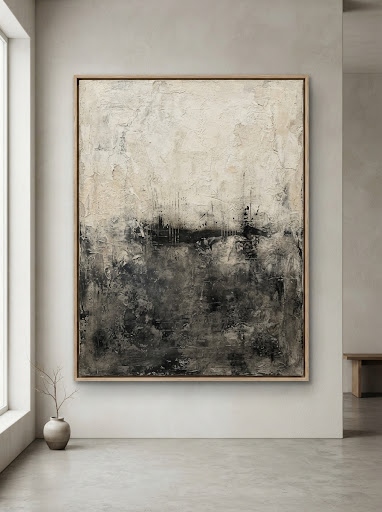
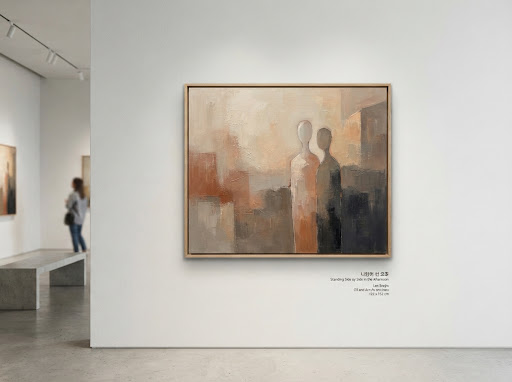
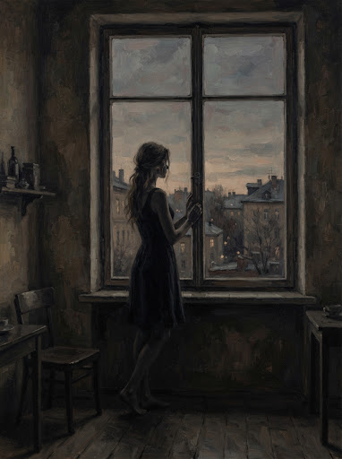
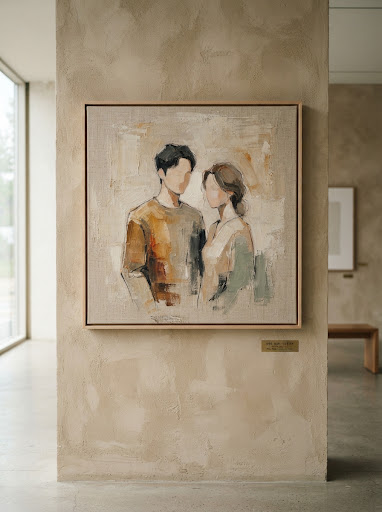
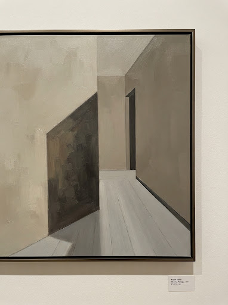

한도윤 / DOYOUN HAN
무제 (침묵의 벽), 2025
혼합재료, 90.9 × 72.7 cm
REF. #HD-2025-01
REF. #HD-2025-01

‘나란히 선 오후’는 서로 다른 호흡과 결을 지닌 두 인물이 마주하는 침묵의 순간을 응시합니다. 한도윤 작가는 웹툰 특유의 빠른 컷 분할과 동적인 서사 구성에서 잠시 물러나, 화이트 큐브의 고요한 백색 벽면 위에서 시간의 흐름을 멈추어 세웁니다.
캔버스 표면의 거친 질감과 미세하게 스며든 아크릴 층은 디지털 스크린 너머의 서사적 주인공들이 실제 공간의 빛과 공기를 호흡하는 지점을 드러냅니다. 둘이 나란히 서 있다는 것은 단순한 물리적 배치가 아닌, 고립된 개인들이 거룩한 침묵 안에서 서로의 존재를 긍정하는 공동체적 연대의 은유입니다.



